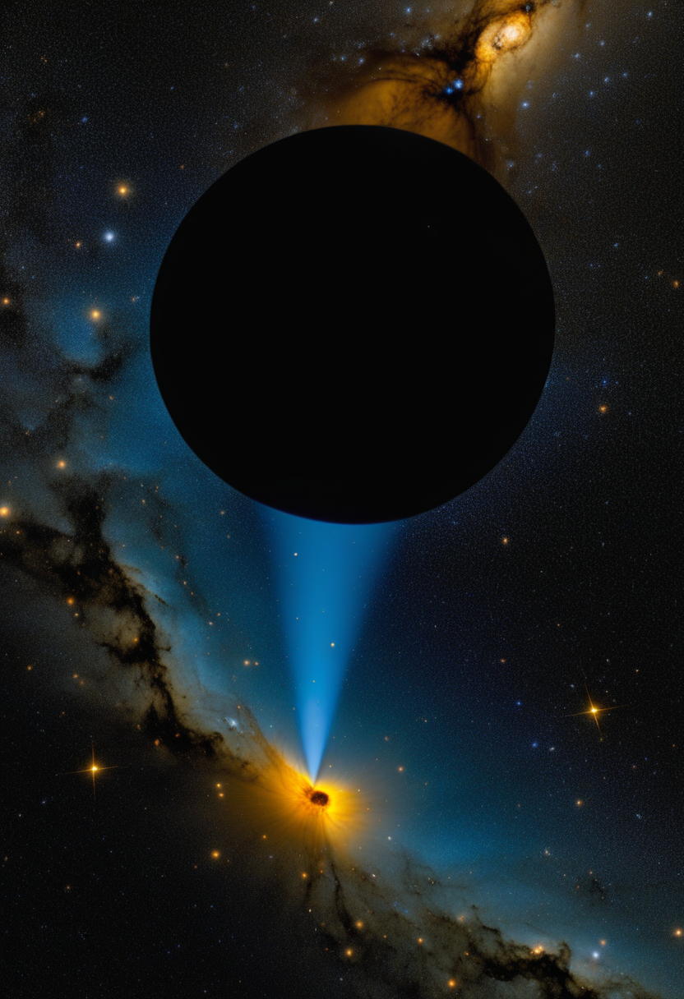
木曜日の便り。本日2026年6月25日、ハーバード・スミソニアン天体物理センターが発表した研究が世界に衝撃を与えた。JWSTが遠方銀河GS 3073の極端な窒素過剰比率を捉え、宇宙黎明期に太陽の1,000〜10,000倍もの超大質量「モンスター星」が存在した直接証拠を初めて掴んだ。これらの怪物星が初期宇宙の超大質量ブラックホールの「種」を提供した可能性が高い——人類が宇宙の誕生秘話の核心に触れた日だ。同じ日にエボラDRCは1,094例・277死者を記録し、拡大が続いている。SMAでは高用量スピンラザの三極承認が完成しNature Medicineに掲載、BIIB115がFDAブレークスルー指定を取得した。脳デジタルツインが臨床実装へ加速するなか、「意識の複製」は依然30〜40年先という科学的評価も出揃った。宇宙の誕生と命の今が交差する木曜日。
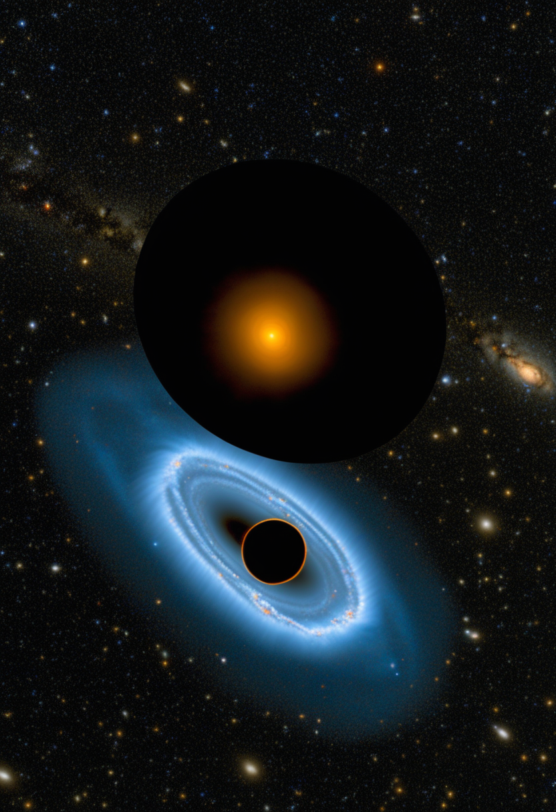
ハーバード・スミソニアン天体物理センター（CfA）主導のチームが、JWSTで遠方銀河GS 3073の極端な窒素過剰比率を発見した。この化学的シグネチャーは既知のいかなる恒星タイプでも説明不能であり、太陽質量の1,000〜10,000倍の「モンスター星」が宇宙黎明期に存在した初の直接証拠とされる。これらの超大質量星が初期宇宙の超大質量ブラックホールの「種」を供給した可能性が高い。ブラックホールの起源という宇宙物理学最大の謎に、JWSTが初めて化学的証拠の光を当てた。
Biogenのスピンラザ（ヌシネルセン）新高用量レジメン（50mg負荷×2回 → 28mg維持・4ヶ月毎）がFDA・欧州委員会・日本で全承認を取得し、三極承認が完成した。DEVOTE試験の結果がNature Medicine誌に掲載され、従来12mgレジメン比での神経変性抑制効果が実証された。SMA患者の標準治療が新世代へ移行しつつある。
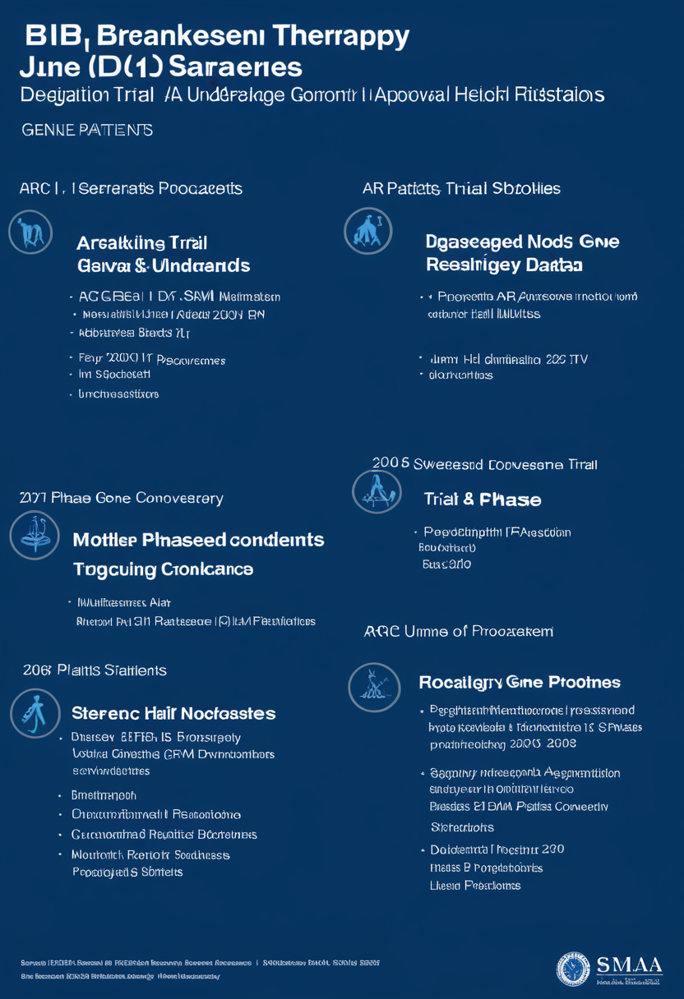
BiogenのBIIB115（サラネルセン）が2026年6月7日、FDAのブレークスルー治療指定を取得した。現在フェーズI試験中で、初期安全性・有効性データは2026年11月の発表を予定。遺伝子治療後も進行するSMA患者への新選択肢として注目が集まる。アピテグロマブのFDA判定日（9/30予定）とも相まって、2026年後半はSMA承認ラッシュが見込まれる。
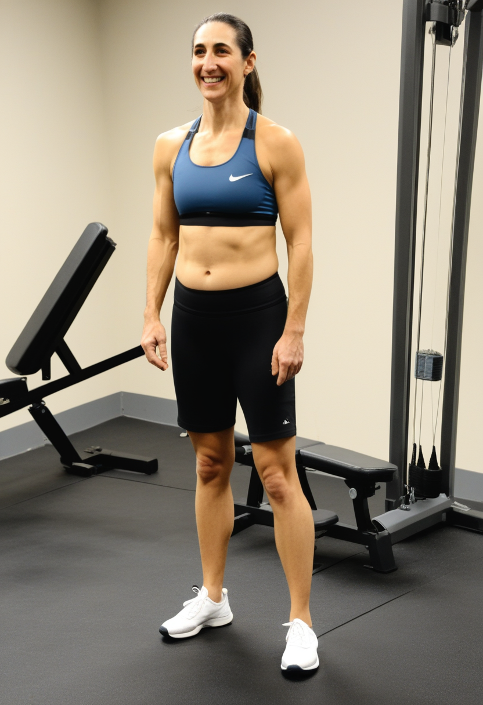
Rocheは2026年3月、マイオスタチン阻害薬GYM329（エムグロバルト/RO7204239）のSMA向けMANATEE試験を含む全プログラムの終了を発表した。安全性は確認されたが有意な臨床的有益性が示されず、フェーズ3への移行なし。SMN非依存型の筋力回復アプローチにおける大きな後退となった。一方でBIIB115・アピテグロマブが新たな治療軸を形成しつつある。
三極承認でスピンラザ高用量が世界標準へ。GYM329終了の一方、BIIB115ブレークスルー指定と11月初期データで2026年後半の承認ラッシュに備えが整う。
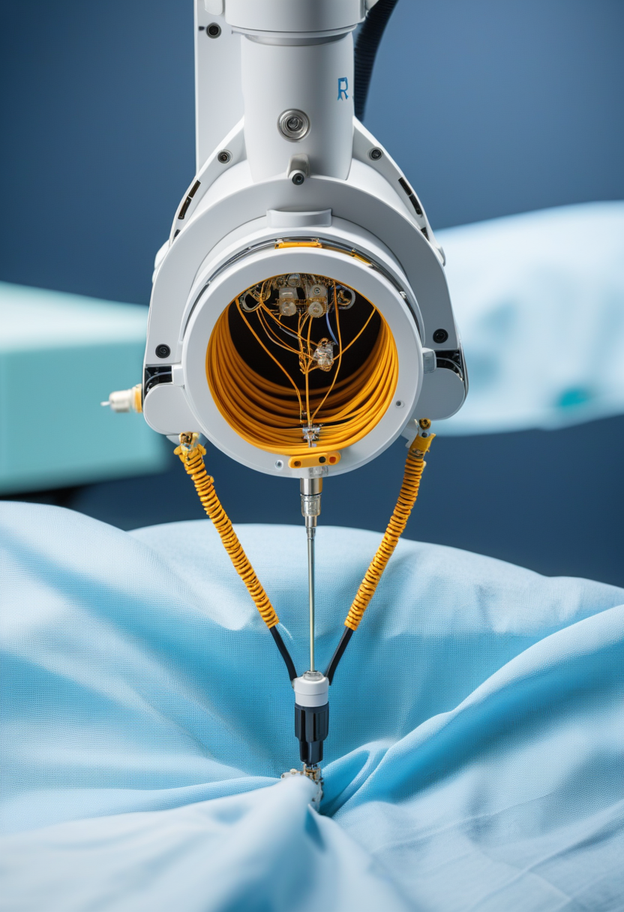
Neuralink N1インプラントの高量産と完全自動ロボット手術が2026年に本格始動。新手術法は硬膜（dura）を除去せずにスレッドを通す低侵襲アプローチで、手術時間と術後リスクを大幅削減する。現在21名超のNeuronautsが参加し、ALS患者が毎分40ワードの入力という実績を達成。硬膜温存技術はBCIの普及障壁を下げる重要な技術的マイルストーンとなる。
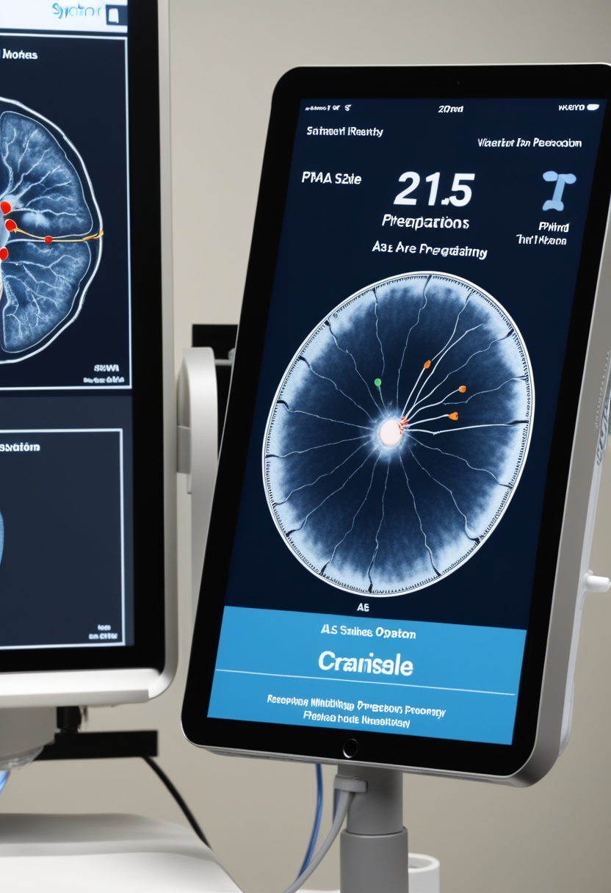
Synchronが2025年11月に2億ドルのシリーズDを完了し、Stentrode（静脈カテーテル経由・頭蓋骨切開不要）の2026年ピボタル試験を本格始動。12ヶ月可行性試験の一次安全エンドポイントは達成済み。ALS患者がApple Vision Pro・iPhone・iPadを思考のみで操作するデモを公開しており、業界初のFDA PMA（販売前承認）取得へ最短距離を走っている。植込み後2年超で信号劣化なしを確認済み。
Neuralink硬膜温存技術で侵襲性の壁を突破、SynchronがPMA申請ピボタル試験へ ── BCIが「患者に届く製品」へ最後の坂を登り始めた。
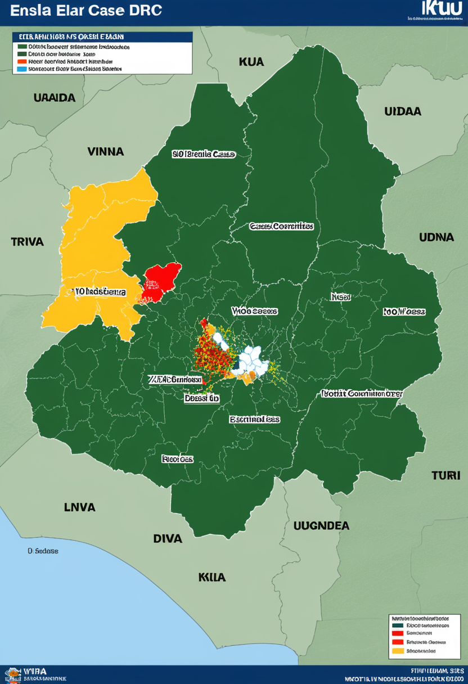
6月23日、DRC保健省が累計1,094例・277死者を報告（前日比+91例）。発生源はイトゥリ州（約997例）・北キブ州（94例）・南キブ州（3例）の3省。ウガンダは6月5日以降新規ゼロ（累計20例・2死者）で越境封じ込めが機能中。有効なワクチン・治療薬は依然なく、WHO PHEICは5月17日以来継続中。拡大ペースは依然高水準にある。
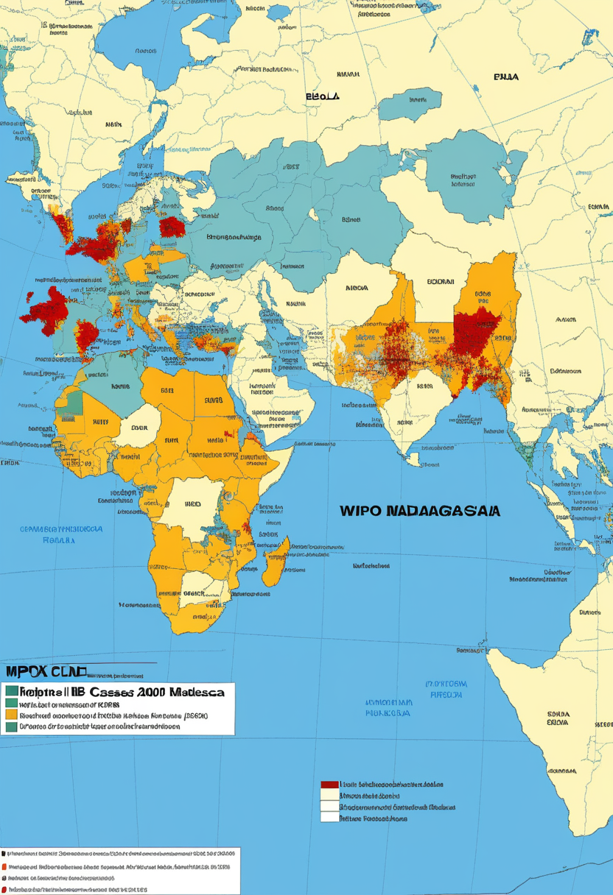
マダガスカルが6月9日時点で確定2,000例超を記録し、アフリカ最大のmpox（クレードIb）流行国となった。WHOマルチカントリー報告No.64はアフリカ全土の感染拡大を警告。WHOは6月17日、エボラ・マールブルクを含むフィロウイルス疾患の包括ガイドラインを史上初めて発行し、複合感染危機への対応体制を整備した。エボラPHEICとmpox流行の同時進行がWHOの対応資源を試している。
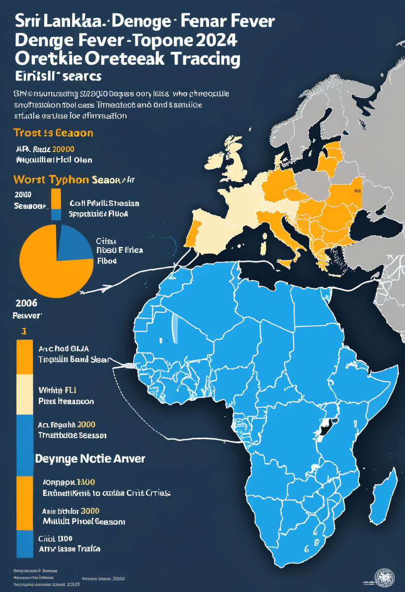
スリランカの2026年デング熱感染者がWHO疾病アウトブレイクニュース集計で41,000例を超え、2019年（年間105,000例超）以来最大規模の流行が進行中。（スリランカ当局の最新集計は44,000例を超えており、集計時点・算定基準の差異による数字差あり。）エボラPHEICとmpox流行が続くアフリカとは別軸で、アジアのベクター感染症も公衆衛生上の重大な課題を形成している。
エボラDRC 1,094例・277死者で拡大続く。WHOが史上初フィロウイルスガイドラインを発行し、mpoxと三重の感染症圧力に備える木曜日。
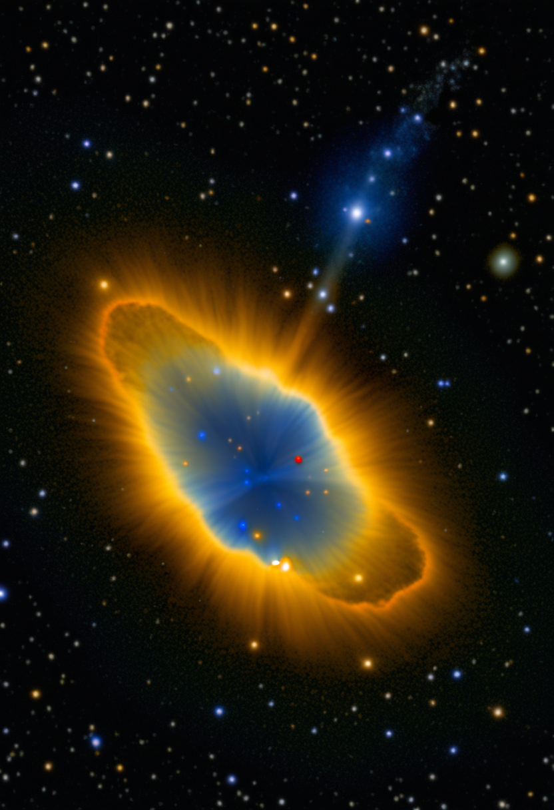
ハーバード・スミソニアン天体物理センター（CfA）主導のチームが、JWSTで遠方銀河GS 3073の極端な窒素過剰比率を発見。この化学的シグネチャーは既知のいかなる恒星タイプでも説明不能であり、太陽質量の1,000〜10,000倍の「モンスター星」が宇宙黎明期に存在した初の直接証拠とされる。これらの超大質量星が初期宇宙の超大質量ブラックホールの「種」を供給した可能性が高く、ブラックホール起源という宇宙最大の謎に化学的証拠が初めて触れた。
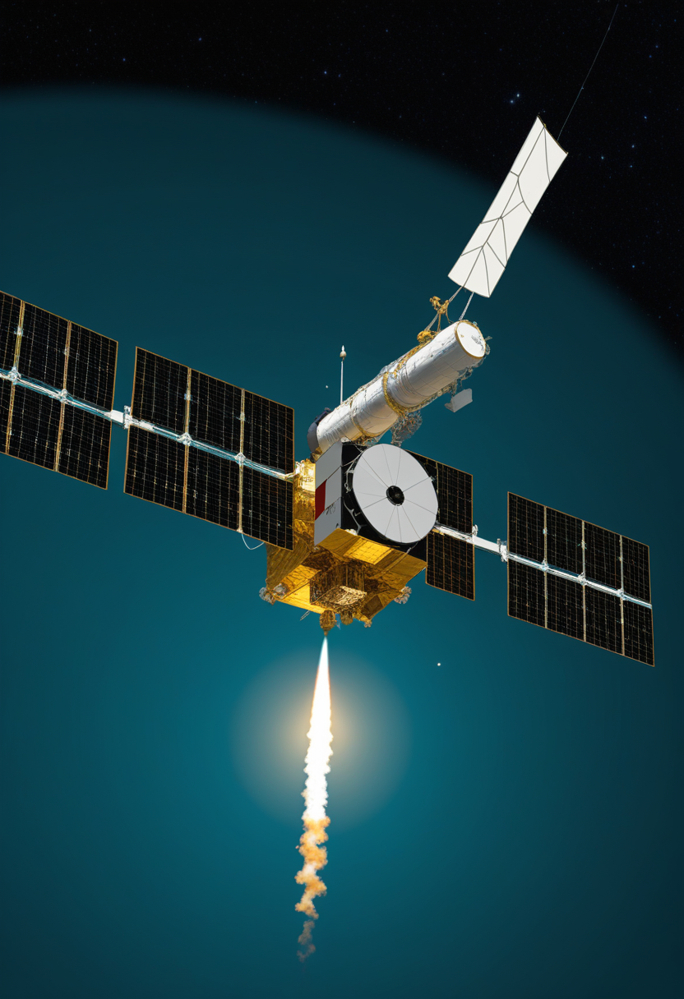
ESAが独自の量子鍵配送（QKD）ネットワーク初号機「Eagle-1」を2026年末から2027年初めに打ち上げる計画を公表。宇宙から地上インフラへ量子暗号を提供する欧州独立セキュリティ基盤を目指す。衛星量子暗号は傍受が物理的に不可能な「原理的に解読できない通信」を実現する。欧州が米中に依存しない暗号セキュリティの自律性を宇宙から構築する戦略的動きだ。
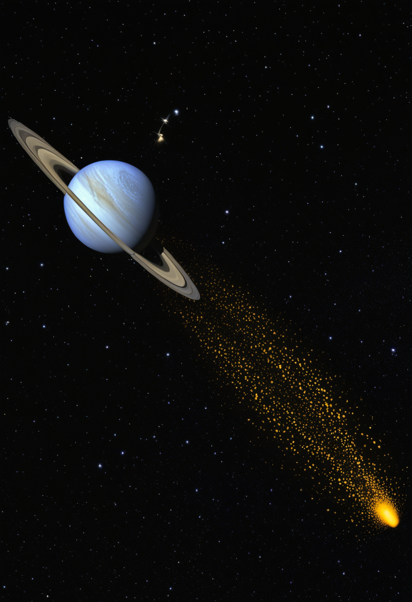
NASAが2026年6月18日、ASTRAイニシアティブ（先進宇宙望遠鏡・宇宙天体物理研究探索）の将来天体物理ミッション計画を議論する特別セッションを開催した。JWSTの成果を踏まえた次世代観測戦略の策定が焦点で、暗黒エネルギー・暗黒物質・宇宙起源の解明に向けた2030年代以降のミッション群をどう設計するかが議論された。モンスター星発見のような成果が、次世代望遠鏡への投資議論をさらに後押しする。
JWSTがモンスター星で宇宙誕生の核心に触れ、ESAが量子暗号衛星で地球の安全を守り、NASAが次世代宇宙への地図を描く ── 木曜日の宇宙は未来へと続いている。
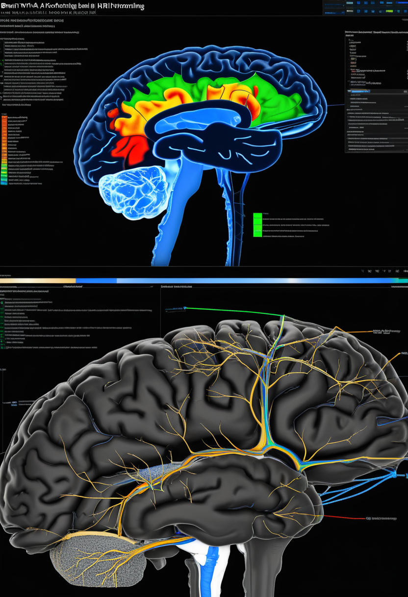
2026年MDPI Brain Sciences誌に掲載された「BrainTwin-AI」論文は、MRI神経腫瘍評価とリアルタイムEEGを統合した次世代認知デジタルツインを発表。脳腫瘍患者の健康状態をリアルタイムで監視・予測し精密介入を可能にするフレームワークを提示。臨床デジタルツインが理論から実装フェーズに移行しつつあることを示す代表例となった。
NCBI PMCに掲載された「Digital Twin Cognition」研究は、神経画像・遺伝情報・生活習慣・行動指標を統合し個人の認知機能を動的にモデル化するアプローチを体系化。認知症や精神疾患の精密診断と個別化介入戦略への応用が示され、デジタルツインが「ブレイン・ヘルスの鏡」として確立しつつある。「脳の監視・予測」と「脳の複製・転送」の間には依然大きな技術的隔絶がある。
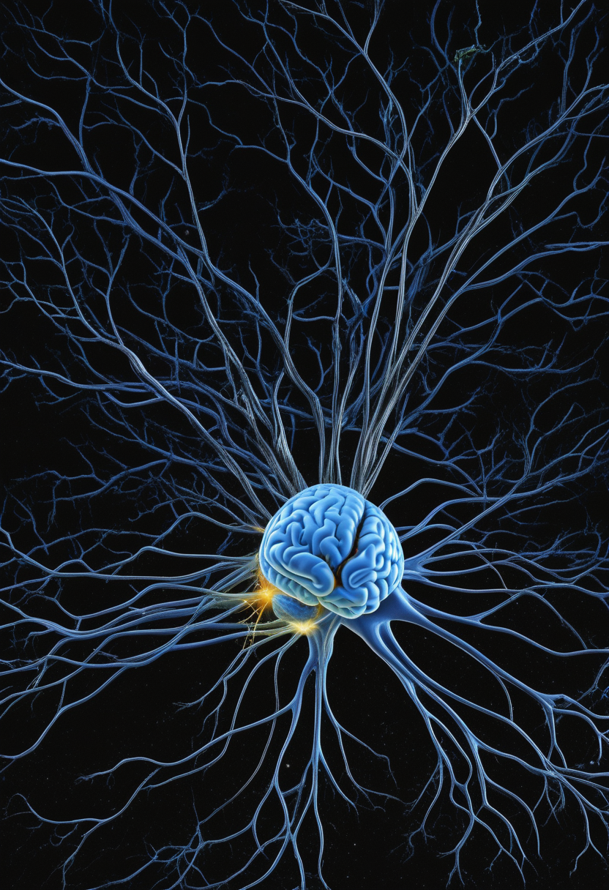
Mindtransfer.meの2025-2026年版レポートは、現時点でシリコン上に人間ニューロンが完全複製された事例はなく、全脳エミュレーション（WBE）実現は30〜40年後が科学的コンセンサスと結論づけた。一方でQualia Research Institute（QRI）は数学的クオリア定量化プロジェクトを2026年に始動。脳デジタルツインの臨床実装が加速するなか、「意識の監視」と「意識の複製」の間には依然深い技術的・哲学的溝がある。
脳デジタルツインが臨床実装へ加速するが、意識の複製は30〜40年先 ── 「脳を映す鏡」と「脳を移す器」は、今はまだ別の世界の話。
本日2026年6月25日、人類は130億年前の宇宙に怪物星が実在した証拠を初めて掴んだ。JWSTが銀河GS 3073の窒素過剰から読み取った化学的シグネチャーは、超大質量ブラックホールがどこから来たかという最大の謎に初めて光を当てた。同じ日にエボラDRCは1,094例・277死者を記録し、WHOは史上初のフィロウイルス包括ガイドラインを展開してきた。SMAの世界では高用量スピンラザが三極で承認完成し、BIIB115がブレークスルー指定を取得した。Neuralink硬膜温存技術とSynchronのPMA申請準備がBCIを製品化の最後の坂へと押し上げている。脳デジタルツインが臨床現場に入る一方で、意識の複製は30〜40年先という現実点検が出揃った。宇宙の誕生と命の今日、命がけの研究者たちが問い続けている。
怪物星の光が130億年かけて届いた日に、今日もおはようございます。